图像、颜色与文件
猫耳朵的边缘把浅棕色毛发与灰绿色背景分开。照片放大后，这条边缘由一格格颜色构成；程序读入照片后，得到的就是这些位置上的颜色数值。同一处像素的红、绿、蓝三个分量，共同决定它显示的颜色。

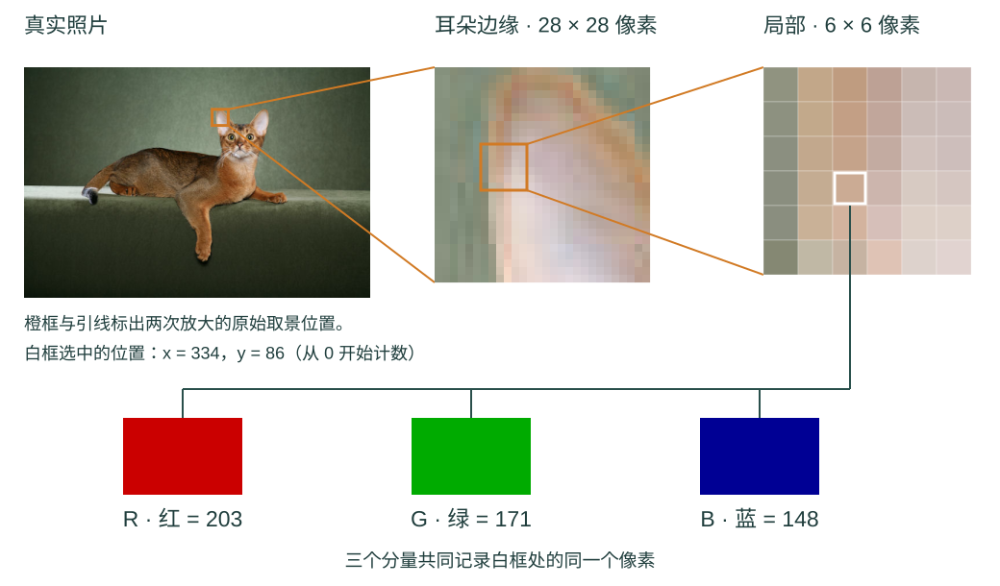
数字图像与像素
上图白框只包含一个固定位置的颜色，无法单独呈现完整的耳朵或毛发。这样的网格位置称为像素。一张图片由许多像素组成，每个位置保存一个亮度值，或红、绿、蓝等多个颜色分量。
同样宽 500 个像素的两张照片，每个像素覆盖的实际区域也可能不同。例如，一张近距离照片和一张远距离照片保存了相同数量的位置，但拍到的范围不同。像素数量不能单独告诉我们物体的现实大小。
一张只有两行三列的灰度图，一共有六个像素位置，可以用六个数字记录。把其中一个数调亮，只会改变对应位置的显示。大照片遵循相同原则，只是网格更加密集。后续的裁剪、缩放和卷积，都在这个有空间位置的网格上进行。

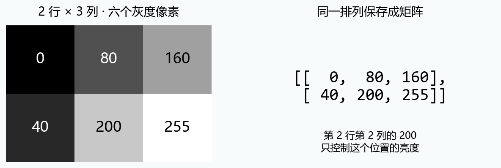
真实照片也把信息保存在这样的网格中。相机的传感器在许多感光位置记录局部光信号，这种按位置取样称为空间采样；把测量强度保存为有限等级的数值，称为量化。网格有多密、颜色等级有多细，会影响最后保存的细节。
空间分辨率与显示尺寸
把刚才的六格图拉大，格子变大了，数值仍然只有六个。大照片在屏幕上放大也遵循这个区别：显示得更大，与文件保存了更多像素，是两回事。 图像的宽和高说明它沿两个方向保存了多少采样位置。一张 600×400 的照片共有 240000 个像素；把它在网页上显示得更宽，并不会自动获得更多真实测量。显示软件只能使用已有数值安排屏幕上的颜色。把小图放得很大后看见方块或模糊边缘，正是采样信息有限的表现。
将原图真正缩小为 60×40，会减少保存的位置数，也会丢失细小结构。再放大为 600×400，可以让画布恢复原尺寸，但已经丢失的毛发和边缘无法仅靠普通插值重新测得。图像的像素尺寸、屏幕上的显示宽度和现实对象的大小是三个不同概念，记录图片处理时要说明具体改变了哪一项。
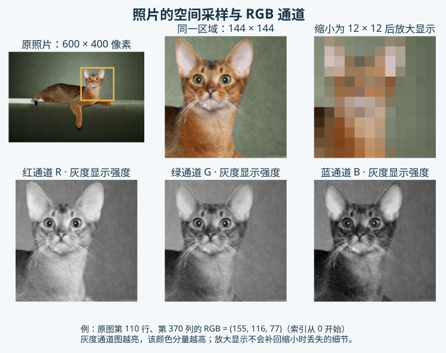
观察同一处猫脸的放大区域：原始网格中相邻颜色存在细小变化，降低采样数量后，这些变化可能合并。图中的 RGB 通道可以分别显示同一位置的三个分量。对照这些视图，能够理解为什么查看一张图片时既要看整体对象，也要看原始尺寸和局部细节。
灰度、RGB 与透明通道
下面的六格演示使用从 0 开始的行、列编号：左上角是第 0 行、第 0 列，坐标 (1,1) 是第二行第二列。编号用于找到位置；格子里的灰度或 RGB 数值用于决定颜色。
灰度图通常每个位置记录一个数。常见 8 位灰度图用 0 表示黑、255 表示白，中间数值显示不同深浅。这里的数值描述存储与显示约定；经过其他处理的科学图像也可能采用不同范围，需要读取来源说明。
交互示意
六个灰度像素
点击任一像素并修改数值，颜色、坐标和数值会同步显示。
教学交互示意，数值和画面随操作实时计算。
RGB 图像每个位置记录红、绿、蓝三个颜色分量。以常见 0—255 范围为例，(255,0,0) 显示红色，(0,255,0) 显示绿色，(0,0,255) 显示蓝色，(255,255,255) 显示白色。(80,80,80) 的三个分量相等，显示为较暗的灰色。RGB 三个通道中的同一坐标共同描述一个像素，不能把它们误认为三张不同对象的照片。
交互示意
一个位置的三个颜色分量
点击任一像素并修改数值，颜色、坐标和数值会同步显示。
教学交互示意，数值和画面随操作实时计算。
RGBA 在 RGB 以外增加透明度通道 Alpha。完全透明的像素如何显示，还取决于它叠加的背景；将 RGBA 简单丢掉 Alpha，可能产生意外颜色。读取普通猫狗照片时通常明确转换为 RGB，避免一部分输入有三个通道、另一部分有四个通道。
交互示意
颜色与透明度一起参与显示
同一块橙色覆盖在棋盘背景上。改动 Alpha，观察背景怎样透过这块颜色；RGB 数值仍然存在。
教学交互示意，数值和画面随操作实时计算。
BGR 使用相同的三个颜色分量，但顺序为蓝、绿、红。某些图像库默认采用 BGR；直接按照 RGB 显示时，红蓝颜色会交换。灰度图还可能被保存为三个相同通道，因此仅凭肉眼看到“黑白照片”不能确定它的通道数。读取后检查通道数、通道顺序和实际显示，三者需要相互对应。
交互示意
同一组颜色数值，交换存储次序
左图按 RGB 显示，右图把 BGR 数组直接当作 RGB 显示。试着增大红色、减小蓝色，左右两块的差异会更明显。
正确 RGB 显示
BGR 未转换便显示
教学交互示意，数值和画面随操作实时计算。
数值类型与值域
在 RGB 演示中，我们给红色输入了 128。代码里同一个数可以写成整数 128，也可以写成小数 128.0；这两种写法涉及存储类型，还没有自动改变颜色范围。 数值类型说明一个数如何存储，以及能够表示的范围和精度。常见图片文件解码后使用无符号 8 位整数，记为 uint8，可表示 0—255。神经网络计算通常使用浮点数，例如 float32，它能够表示小数和负数，适合权重、梯度与连续图像运算。
把 uint8 转成 float32，只改变表示类型，原值 128 仍然是 128。再除以 255，才把这个数变成约 0.502。类型转换与范围变换需要分别理解。如果已经位于 0—1 的图像又除以 255，显示会很暗；如果本应使用 0—1 的计算收到了 0—255，输入尺度会相差 255 倍。

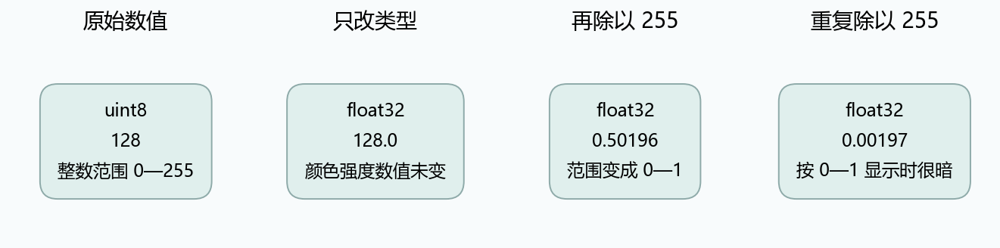
有些医学或科学图像使用 16 位整数、浮点强度或特殊编码，不能看到“图片”就一律除以 255。本课程的猫狗 RGB 照片采用常见 8 位表示，仍要在读取后检查实际类型、最小值和最大值。类别标签则是离散编号：猫 0、狗 1，标签 1 不表示“比猫亮一点”。颜色与类别虽然都可以写成数字，含义不同。
图像文件与内存
同一张照片保存成 JPEG 和 PNG，磁盘上的文件大小可能不同，打开后却都要变成逐位置排列的数值。文件压缩影响磁盘大小，数值的数量和类型影响解码后的内存。 JPEG、PNG 等格式决定图片怎样保存在磁盘上。JPEG 通常采用有损压缩，较高压缩程度可能带来块状或边缘伪影；PNG 使用无损压缩，能够恢复其保存的像素值，也适合保存离散标签图。把 JPEG 转存为 PNG，只能保存当前已经解码的像素，无法恢复此前压缩丢失的信息。
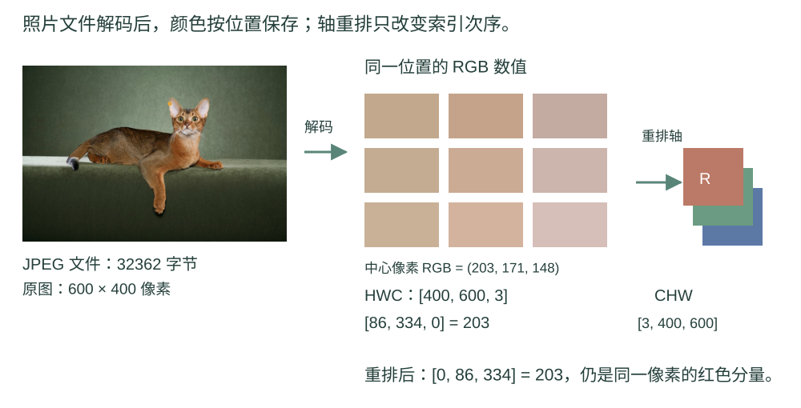
磁盘上的文件大小不能直接说明模型读取后占多少内存。同样尺寸的两张 JPEG，会因纹理和压缩设置不同而大小不同。解码成张量后，内存主要取决于数值数量和类型。一张 256×256 的 RGB 图像包含 196608 个数，用 uint8 保存这些数约需 192 KiB，改成 float32 约需 768 KiB，尚未计算额外对象开销。

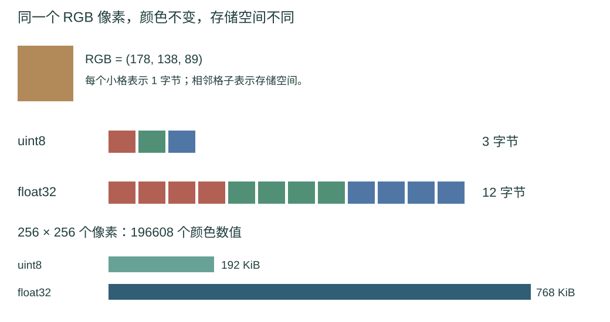
十六张这样的 float32 图片，单是输入数值就约需 12 MiB。训练还要保存中间特征、参数和梯度，实际内存会更大。这也解释了为什么把边长翻倍，会让像素数量变成四倍；增大图片尺寸和批量大小都需要考虑计算条件。
图像处理
缩放会改变图像网格的大小，裁剪会改变保留的范围，数值转换则可以保留位置、只改变颜色的记录方式。这些操作作用于不同对象；同一张照片经过处理，可能形状变了，也可能看起来完全一样。
缩放、插值与裁剪
猫和狗的原始照片宽高不同，普通批量无法直接把它们堆在一起。把它们处理成相同尺寸时，照片里的耳朵、身体和背景也会跟着变化。 模型常需要同一批图片具有一致尺寸。缩放要为新的网格位置确定数值，这项估计称为插值。最近邻直接采用附近一个像素的值，放大后容易看见块状边界；双线性插值根据附近四个位置的数值加权计算，颜色通常更平滑。缩小时还需要注意抗混叠处理，避免细密条纹形成不存在的纹路。
RGB 照片可以使用适合连续颜色的插值。分割标签图中的 0、1、2 等表示类别，插出 1.4 没有对应类别，因此标签缩放通常使用最近邻。两种对象即使都是图像文件，也需要根据数值含义选择处理方式。
将 600×400 直接改成 128×128，会分别压缩宽和高，动物的比例可能改变。常见选择包括保持比例缩放后裁剪，或者保持比例缩放后补边。裁剪会移除观察范围，补边会增加人工背景，各有影响。先显示处理后的图片，检查耳朵、身体和背景发生了什么，再为自己的项目确定方法。
裁剪与缩放也会影响坐标。原图中一处位置经过裁剪后，起点改变；经过缩放后，位置间距改变。后面做图像分割时，照片与掩膜必须接受同样的空间变换，才能继续表示同一位置。
交互示意
观察缩放、插值和裁剪
这张照片来自本章的真实猫样本。先缩小，再尝试放大时的插值；切换到裁剪，观察画面里哪些内容消失了。
原始照片 · 画布仅用于展示
处理后 · 放大查看像素
真实照片：Oxford-IIIT Pet。平滑模式由浏览器 Canvas 实现；显示画布的大小和处理后实际像素尺寸分开记录。
归一化与标准化
把颜色值 128 除以 255，得到约 0.502；黑色 0 和白色 255 分别变成 0 和 1。本课程的三个代码项目都采用这项范围缩放，把 RGB 图片统一转为浮点数、再除以 255。图像的行列和相邻关系保持不变，模型使用的数值尺度改变了。显示函数按 0—1 解释浮点 RGB 时，原来的颜色仍能正确显示。
这种统一范围的处理通常称为归一化。下面每个直方图都把数值分成一些小区间：横轴是颜色值，纵轴是落在该区间的像素数量。除以 255 后，各颜色值所在的横轴位置缩小了 255 倍，像素总数没有变化。
其他范围变换与标准化：需要更换预处理时阅读
均值是把数值相加后除以个数；例如 0.2、0.4、0.6 的均值是 0.4。标准差描述这些值围绕均值的分散程度，分散越大，标准差通常越大。标准化用这两个参照改变尺度，不会自动增加图像细节。
常见通道标准化按“当前值减去均值，再除以标准差”计算。假设某通道的值为 0.8，所用均值为 0.5、标准差为 0.25，处理结果就是 (0.8−0.5)÷0.25=1.2。出现大于 1 或小于 0 的数是这种变换的正常结果，不能据此判断图像损坏。
自己估计均值和标准差时，使用训练数据并保存统计方式，验证和测试沿用同一规则。使用预训练模型时，读取该权重要求的颜色顺序、尺寸和标准化参数。展示标准化后的图片前，通常需要恢复相应颜色范围；直接把标准化张量交给显示函数，可能得到失真的颜色。
Min–Max 的算式是 (x−最小值)÷(最大值−最小值)，极值相同时需要单独处理。映射到 −1—1 使用 2×(x÷255)−1。标准化使用 (x−均值)÷标准差。它们采用不同参照，不能互换名称，也不保证能增加原图细节。
下图把同一张照片按几种常见算式处理。每行右侧的直方图统计红色通道的实际数值；横轴改变时，先看数值范围，再对照中间的像素示例。除以 255、映射到 −1—1、标准化都可以在显示前还原，因此图像外观保持一致。Min–Max 使用本图每个通道的极值拉伸，可能改变原来的颜色对比。

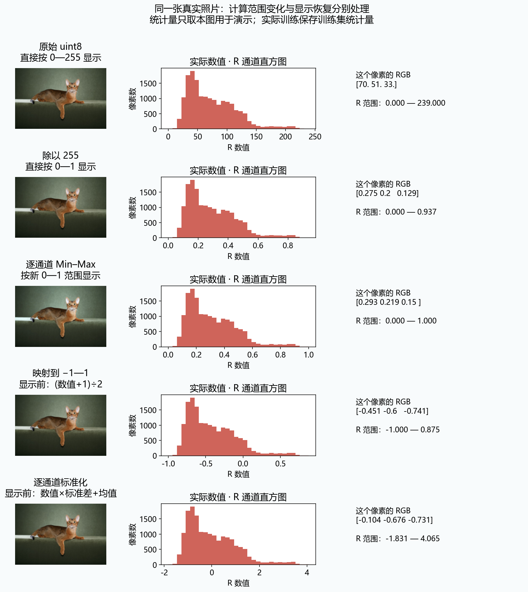
张量与运算
一张 RGB 照片包含行、列和颜色通道，几张照片还多一个样本编号。张量把这些数值按轴排列，轴的次序说明每个索引指向哪个对象。PyTorch 是 Python 中常用的深度学习框架，提供张量运算、神经网络和模型训练工具。
标量、向量、矩阵与张量
两行三列的数字可以表示一张灰度图，三个数可以表示一个像素的颜色。这两种排列在数学里有熟悉的名字：沿一根轴排列的是向量，沿行、列两根轴排列的是矩阵。PyTorch 把它们和更高维的排列统一称为张量。一个单独的温度值是标量，在 PyTorch 中也是零维张量。
| 轴数 | 常见名字 | 代表数据与形状 |
|---|---|---|
| 0 维 | 标量 | 一个温度值；[] |
| 1 维 | 向量 | 按时间排列的读数；[T] |
| 2 维 | 矩阵 | 灰度图；[H,W] |
| 3 维 | 三维张量 | 单张 RGB 图片；[C,H,W] |
| 4 维 | 四维张量 | 一批 RGB 图片；[B,C,H,W] |
| 5 维 | 五维张量 | 一批 RGB 视频；[B,T,C,H,W] |
PyTorch 用张量统一表示这些对象。张量可以有零个、一个、两个或更多轴；标量也是零维张量。这里的“维度”指索引所需的轴数，并不等于有多少个数。一个含 1000 个元素的向量仍然只有一个轴，而形状为 2×2×3 的张量有三个轴、十二个数。
每一根轴都需要有具体含义。对于图像，它可能表示样本、颜色通道、高度或宽度；对于其他数据，也可能表示时间或特征。程序只看到尺寸和运算规则，不会自动知道哪一根轴是“颜色”。这些含义需要在读取、变换和模型计算中保持一致。
因此，一维张量可以是向量，二维张量可以是矩阵；三维、四维、五维通常直接称为相应维数的张量，没有通用的特殊名称。维数也不能独自说明数据内容：三维张量既可能是 RGB 图片的 [C,H,W]，也可能是体数据的 [深度,高,宽]。四维张量可以是一批图片，也可以是单段彩色视频的 [T,C,H,W]。先写清轴的含义，再理解形状。

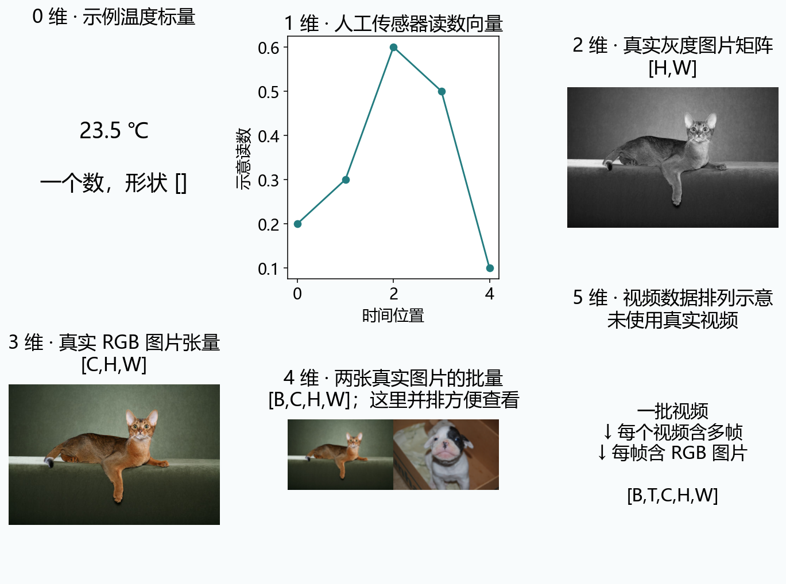
轴、形状与索引
shape 记录每根轴的长度，索引记录要取哪一个位置。同一张 128×128 RGB 照片按行、列、通道保存时，形状是 [128,128,3]；交换轴次序后，形状是 [3,128,128]。照片仍包含 49152 个数。
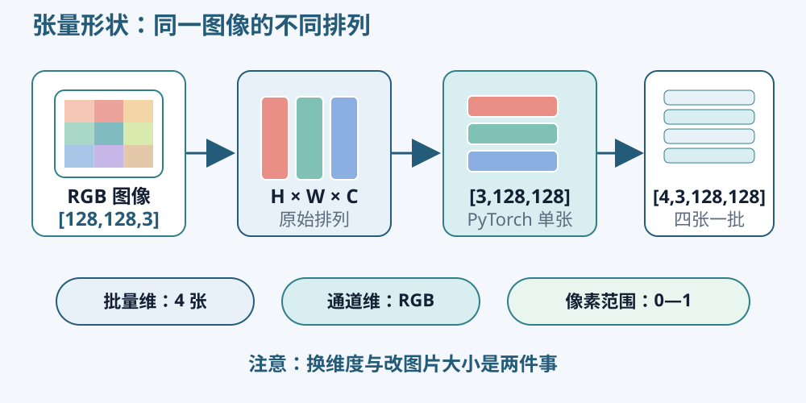
PyTorch 的二维卷积通常接收 [B,C,H,W]：B 为批量大小，C 为通道数，H 为高度，W 为宽度。四张 128×128 RGB 图片组成一批后，形状就是 [4,3,128,128]。这些字母是解释含义的约定，张量本身主要保存数值、形状、类型和设备等信息。
索引从 0 开始。对于按通道、行、列排列的图片，[0,2,5] 取红通道第 3 行第 6 列的一个数；要取这一位置完整的 RGB，写作 [:,2,5]，其中冒号表示保留全部通道。
| 同一张图片 | 形状：每根轴多长 | 同一像素的红分量 |
|---|---|---|
NumPy 数组 array | [128,128,3]：行、列、通道 | array[2,5,0] |
PyTorch 张量 tensor | [3,128,128]：通道、行、列 | tensor[0,2,5] |
这两个索引必须得到同一个红色数值。形状里的 128 表示整根轴的长度，索引里的 2 或 5 表示轴上的某一个位置；索引值不能达到该轴的长度。
选择一个位置的全部通道，可以得到 RGB 向量；选择一整行，可以得到沿水平方向的一组像素。切片还可以选取一段范围，常见规则包含起点、不包含终点。因此第 2 行至第 4 行共三行，对应索引范围 1 至 4 的前闭后开区间。
批量与对应标签
现在手里有四张同样尺寸的照片。每张照片各自保留一份颜色网格，再给它们增加图片编号，就能一起送入模型。 批量 batch 是一次交给模型的一组样本。把多张相同尺寸的图片沿新的样本轴堆叠，能够让硬件同时处理它们。这个操作保留每张图的独立编号，不能把不同照片拼接成一张大照片再当成同一种输入。
图片的次序与标签的次序必须一致。四张图片的输入形状可以为 [4,3,128,128]，猫狗标签为 [4]，模型分数为 [4,2]。第二个标签描述第二张图片，第二行分数也属于第二张图片。打乱样本时，需要让图像与标签一起移动。

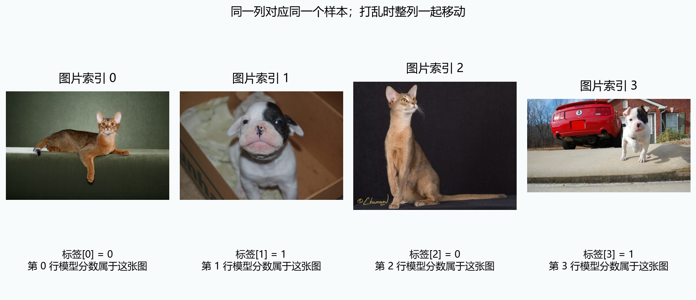
同一批中通常要求图片尺寸一致，因为普通堆叠操作要形成规则数组。原图大小不同时，先选择合适的缩放、裁剪或补边方法。数据集包含的总样本数与批量大小不同：数据集有几千张照片，一次只读取其中若干张。最后一批可能少于预设批量大小，模型不应依赖固定的样本数量。
需要调试代码时再读：张量汇总、广播、轴变换与设备
张量运算与汇总
一张照片的红色通道有许多数值。我们可以只问这一层的平均值，也可以问整张照片的平均值；汇总哪些位置，会决定结果还剩下哪些轴。 逐元素运算让相应位置分别计算，例如每个颜色值除以 255，或者两张同尺寸图像在相同位置相减。矩阵乘法则把某一行和某一列的元素相乘再相加，常用于加权组合。两种运算的规则与输出形状不同，不能只凭输入都是张量就互相替代。
求均值需要明确汇总哪些轴。对于 [B,C,H,W]，仅汇总 H、W，会留下每张图、每个通道的均值，形状为 [B,C]；同时汇总 C、H、W，得到每张图一个总体均值，形状为 [B]。再把 B 汇总，才得到整批数据的一个均值。
先预测输出形状，再运行一小段计算，是理解张量操作的有效方法。如果想得到三个通道各自的统计，却只得到一个数，说明颜色轴也被汇总掉了。保存均值时同时写清统计范围，能够避免以后把每图均值与训练集统计混用。
广播与对齐
如果三个颜色层各有一个均值，我们需要让每层的所有像素减去自己的均值。三个数不能随意与一幅图对齐，要先说明它们对应哪根轴。 广播允许形状不同、但某些轴兼容的张量一起进行逐元素计算。最简单的例子是让整张图减去一个标量，每个位置都使用同一个数。若要让红、绿、蓝通道分别减去不同均值，就需要把三个数放到通道轴对应的位置。
对于 [B,3,H,W]，通道均值可以表示成 [1,3,1,1]。长度为 1 的轴表示这项数值沿该方向重复使用：所有样本和空间位置使用各自通道的均值。PyTorch 从右侧对齐各轴，同一位置的长度需要相同，或其中一个为 1。
直接使用形状 [3]，三个数会先尝试对齐最右边的宽度轴。宽度恰好为 3 时，运算可能成功，却按列减去了三个数。用一个宽度为 3 的小张量比较两种写法，再检查每个位置，能够看见这种形状合法、含义错误的情况。
reshape 与 permute
把照片从“行、列、颜色”改成“颜色、行、列”，每个像素仍要找到自己的三个分量。只改变形状的写法，并不一定完成了颜色轴的位置交换。 reshape 重新解释元素的分组形状，元素总数保持不变。把 2×3 的灰度图整理成长度 6 的向量，是一个典型例子。这样做会暂时移除行列结构的明确表示；后续想恢复图像，需要知道原来的形状和排列方式。
permute 改变轴的排列，用于将 HWC 表示调整为 CHW。观察一张 2×2 的 RGB 小图：四个像素依次为 A=(1,2,3)、B=(4,5,6)、C=(7,8,9)、D=(10,11,12)。正确调整后，红色通道的两行应为 (1,4) 和 (7,10)，绿色通道为 (2,5) 和 (8,11)，蓝色通道为 (3,6) 和 (9,12)。
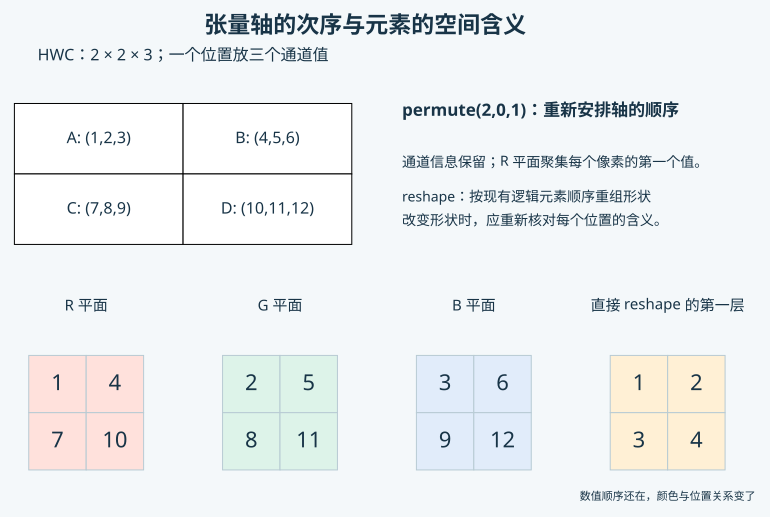
若把连续存放的 1 至 12 直接 reshape 为 [3,2,2]，第一层会变成 (1,2) 和 (3,4)，把不同颜色和位置混在一起。输出形状虽然相同，像素含义已经不同。因此轴重排需要使用明确的轴变换，不能只改 shape。某些变换还会改变张量的内存步幅；初学时先检查数值位置，遇到后续操作要求连续内存时再查看相应说明。
设备、数据与参数
同一张照片可以由 CPU 计算，也可以放到 GPU 上计算。如果照片在一个设备、模型参数在另一个设备，它们无法直接一起完成运算。 CPU 和 GPU 都能保存张量并执行计算。设备信息说明当前数值位于哪里，它不会改变张量表示的是图片还是标签。同一次模型运算中，输入与参数通常需要放在兼容的设备上；仅把图片移到 GPU，而模型仍在 CPU，无法直接完成常见的前向计算。
模型参数是将来要学习的权重，输入图片是用来计算的数据。二者都可以是浮点张量，但作用不同。类别标签通常采用整数类型，布尔掩码用于选择有效位置。保存和加载文件后，再检查类型、形状、设备以及类别对应，可以及时发现读取方式与训练时不一致的问题。
Python 中的变量名用来引用这些对象；列表保存有顺序的项目，字典用名称保存设置，函数组织一项具体操作。Kaggle 练习会让你修改这些小例子，再将照片读成张量。暂时不熟悉语法时，先说清输入与输出是什么，有助于理解每一行正在处理哪个对象。
猫狗数据与知识练习
照片文件保存的是经过编码或压缩的数据。Image.open(...).convert("RGB") 用 PIL 读成图像对象；np.asarray(image) 用 NumPy 取得行、列、通道排列的数组；torch.from_numpy(array) 把数组交给 PyTorch，再用 permute(2,0,1) 把颜色轴移到前面。这些对象承担不同操作，表示的仍是同一张照片。
| 操作 | 得到的对象 | 保持或改变了什么 |
|---|---|---|
| 打开照片 | PIL 图像，尺寸为宽 × 高 | 解码文件；可以显示、缩放和裁剪 |
| 取得数值 | NumPy 数组 [H,W,3] | 取得每个位置的 RGB |
| 交换轴与缩放数值 | PyTorch 张量 [3,H,W] | 位置次序改变为 CHW；浮点数除以 255 |
| 组成一批 | PyTorch 张量 [B,3,H,W] | 增加样本轴；每张图保留自己的标签 |
练习中的颜色、裁剪、归一化和张量操作分成不同代码块。打开 Kaggle 后点击 Copy & Edit 取得可编辑副本，第一次从上到下运行；此后修改某块自己的变量，可重跑该块。改变了供下文使用的图片或模型时，需要重跑后续相关块。操作可查看学习基础。

猫 · species 1 → 类别 0
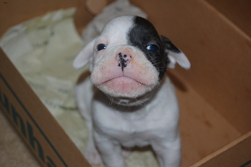
狗 · species 2 → 类别 1
Oxford-IIIT Pet 提供宠物照片、猫狗 species、37 个品种及分割标注。本项目的猫狗分类使用 species：官方 1 为猫、2 为狗，对应模型标签 0 和 1。品种编号属于另一种任务，不能直接当成猫狗标签。先显示照片和对应名称，再建立自己的类别表。
知识练习已附少量真实照片；后面的猫狗与分割代码项目已附完整 Oxford-IIIT Pet 数据，无需重复下载。项目读取 images 中的照片和 annotations 中的标注：trainval.txt 与 test.txt 是官方样本清单，trimaps 是分割标注。数据目录与 Python 变量名会在 Notebook 中同时显示。
PPT 实践准备
猫狗项目的展示需要一张可编辑流程图和一页结果。保存本章读入的一张照片，注明文件名、尺寸和颜色通道，供流程图中的图像输入使用。下一章的 PPT 教程包含画布、字体、对齐、连接符和明确任务。